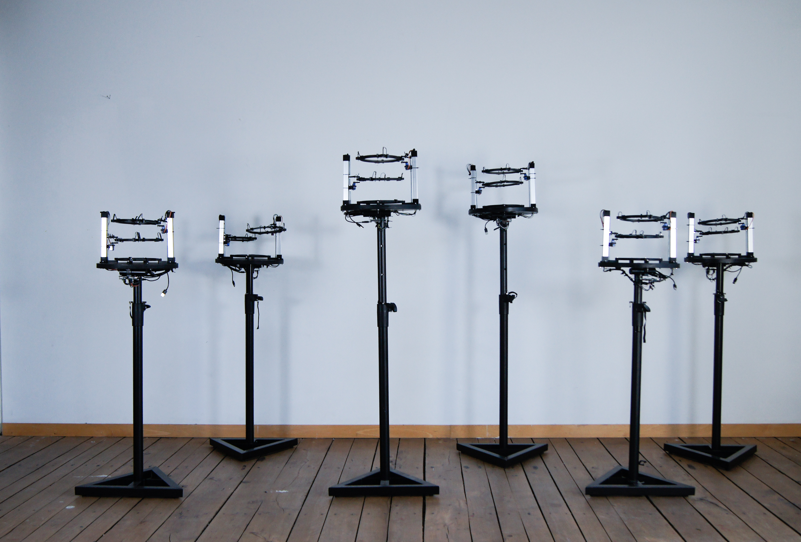
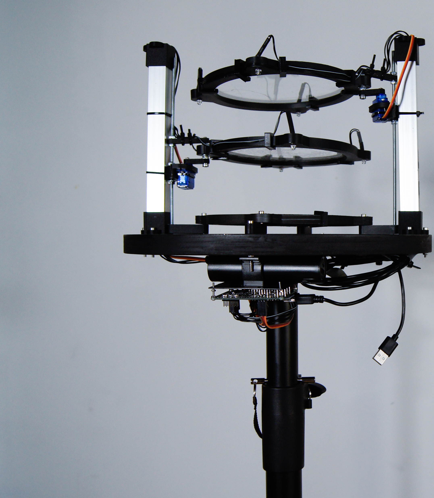

Remote Sensing, a Reconciliation with the Forced Diversion of C. River
An experimental data visualization, and political project,
which aims for the restoration of the relationship between an area and its history.
Between 2018 and 2019 the C. river suffered an abrupt diversion caused by the construction of a hydroelectric dam.
This was undoubtedly an environmental mistake,
which led to irreparable damage to the area and the communities living along its banks.
In order to tell the story of the C. River from
a new perspective, I reconstructed the environmental impacts of the construction of the dam, using satellite information,
and data from geographical remote sensing tools.
An NDVI index is used to translate this information
into an installation that represents the changes the C. river has suffered.

Installation
Remote sensing, a Reconciliation with the Forced Diversion of C. River
2021
This project consider the social context under a decolonized post humanist perspective, challenging geopolitical processes through assuming a new ecological perspective by accounting for non-human actors as political, and by shifting the scope into a decolonizing one. This project aims for a plastic space that will allow the re-signification, visualization and reconciliation between the territory and its story.
This story tells the abrupt devastation of one of main river in Colombia over the last 10 years. With the project “Remote Sensing, a Deviation of the C. River” I wanted to understand the motivations and reasons for exploitation, and the multiplicity relationships within space with the purpose of bringing this story to new spaces of discussion. The installation presents six different models each one of these represent one specific year along this period of time. With the use of the Normalized Difference Vegetation Index (NDVI), the visualization of the changes in space are much more perceptible.
Remote sensing addresses the lack of recognition outside the ontological euro-western scope towards other ontologies, therefore the inability of agency for non-human actors as subjects of rights or personhood, and the dangers this entails. For instance, the risk of a normalized colonialist discourse that traverses and transgresses the understanding of non-human actors diminishes the view on non-human actors to subordinated objects that fulfil human purposes. This normalized colonialist discourse is commonly used to justify a third party to make unlimited exploitation of non-human actors. The absence of questioning matters like hyper-relationships between agents; their importance, role and even their existence as part of a constant interaction and effort to reach an equilibrium within the ecosystem. The colonialist mindset encourages, promotes and pledges development on social and economic welfare by means of exploitation of natural resources.
This indeed is highly problematic. The way of proceeding only within the anthropocentric perspective can become very violent towards non-human actors. If there is no recognition for them as agents, this leaves them in danger, unprotected and bare of power. This detrimentally affects their rights, as well as the visibility of their existence and the recognition of their innate purposes. Action which promotes hierarchical categorization is grounded in utilitarianism. The colonialist mindset is based upon this logic, a vertical hierarchical system. Those social groups that are on the higher ranks are also the ones with more authority, privilege and power, decreasing proportionally for each group until it reaches the bottom, groups without power, authority or privilege whatsoever. In this case, non-human actors are not even considered to be inside the hierarchy, because they are not recognized as part of a social group with a capacity of agency. This invalidates any possibility of legal power, autonomy and decision making for them, leading to the perpetuation of a utilitarian view towards non-human actors, and entailing the support of discourses on savage capitalism.

Installation
Remote sensing, a Reconciliation with the Forced Diversion of C. River
2021

Installation, Vitrine 381
Remote sensing,a Reconciliation with the Forced Diversion of C. River
2021
Vegetation Layer
Remote sensing, a Reconciliation with the Forced Diversion of C. River
2020
3D Model
Remote sensing, a Reconciliation with the Forced Diversion of C. River
2020
3D Model
Remote sensing, a Reconciliation with the Forced Diversion of C. River
2020
3D Model
Remote sensing, a Reconciliation with the Forced Diversion of C. River
2020

3D Model
Remote sensing, a Reconciliation with the Forced Diversion of C. River
2020

3D and Elevation model of Terrain
Remote sensing, a Reconciliation with the Forced Diversion of C. River
2020
NDVI Index in CAD Model
Remote sensing, a Reconciliation with the Forced Diversion of C. River
2020